仿卫衣侦察台逻辑：四模块开款矩阵 + 白底成衣效果图 + L 码尺寸 + Amazon / SHEIN / Temu / 独立站热销直达。 本品类是普通男标短袖 T 恤（纯色、重磅、功能、肌理、洗水、拼接/刺绣），不是 3D 满印图形 Tee。
日常基础走量 + 健身运动功能。基础看版型与克重，运动看弹性与排汗。
提质溢价核心：重磅/匹马棉打手感，华夫格/竹节棉/棉麻打风格，凉感/防污/莫代尔打卖点。
酸洗做旧、炒雪花破洞、扎染渐变。美式复古 / 高街废土 / 度假风，适合高溢价潮流单品。
色块拼接 / 假两件加层次，贴布绣 / 小面积刺绣提品质。节日印花只做爆发点，不主攻图形 Tee。
2026 热卖锚点（检索当日）： Amazon 男 T 榜前排是 Gildan / Hanes / Comfort Colors / Pro Club 重磅基础盘，#9 已出现 oversized vintage washed / acid wash； 运动榜是 UA / 速干排汗；GQ 重磅首选 Buck Mason Field-Spec（310gsm，$62），平价锚 Uniqlo U / Kirkland 205gsm； SHEIN / Temu 前排是华夫格、重磅纯棉、酸洗宽版；独立站 Buck Mason 把 Field-Spec / Slub / Pima 做成三条面料轨。
点卡片看平台实时热销。上架走右侧 免审路径：运动 T / 休闲 T / 亨利衫，不要走男士时尚主路径。
Temu / 全托管先按款型选类目，不要挂「男士时尚 > 男士 T 恤」。右侧黄条可一键复制。
| 标签 | 用在哪些款 | 类目路径 |
|---|---|---|
| 运动T | 速干、排汗、压缩、健身训练 | 运动与户外用品 > 健身、训练用品 > 健身服 > 男士 > 男士休闲运动衫、T恤 > 男士休闲运动T恤 |
| 休闲T | 基础纯色、重磅、华夫格、竹节棉、棉麻、莫代尔、酸洗、扎染、拼接、刺绣 | 运动与户外用品 > 运动户外服饰 > 男士运动户外服饰 > 男士运动休闲衬衫和 Polo 衫 > T 恤 |
| 亨利衫1 | 短袖亨利领、棉麻亨利、户外休闲亨利 | 运动与户外用品 > 户外休闲 > 徒步和户外休闲服装 > 男士户外服饰 > 男士户外衬衫 > T 恤 |
| 亨利衫2 | 同上，备选一条 | 服装、鞋靴和珠宝饰品 > 体育专用服装 > 户外服饰 > 男士户外服饰 > 男士户外衬衫 > T 恤 |
细分：日常基础 · 健身运动。 定位走量款与功能款。基础款先把版型（正肩合身 / 略宽松）和克重写死；运动款卖弹力、排汗、速干，不要和重磅纯棉抢同一套主图话术。
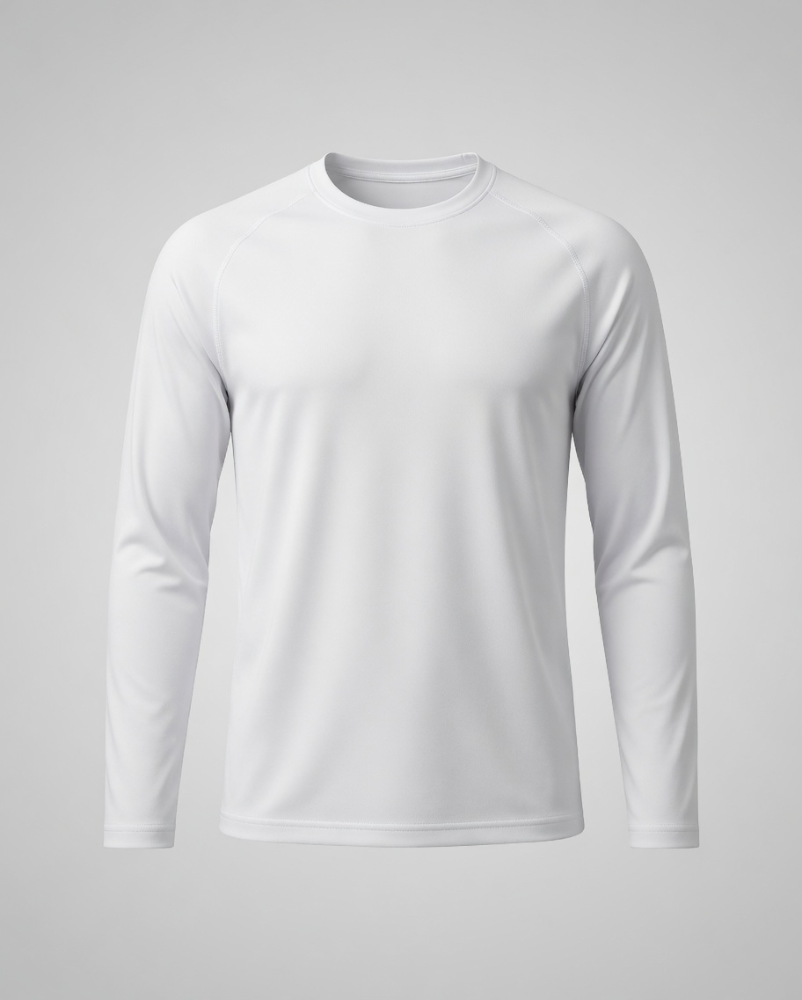
| 衣长 | 72 |
| 肩宽 | 48 |
| 胸围 | 108 |
| 摆围 | 106 |
| 袖长 | 22 |
| 领宽 | 20 |
日常走量锚。白 / 黑 / 灰三色先开，克重 180–220g。领口加螺纹、肩线正、不透是差评防线。Amazon 榜几乎全是这类空白 Tee。
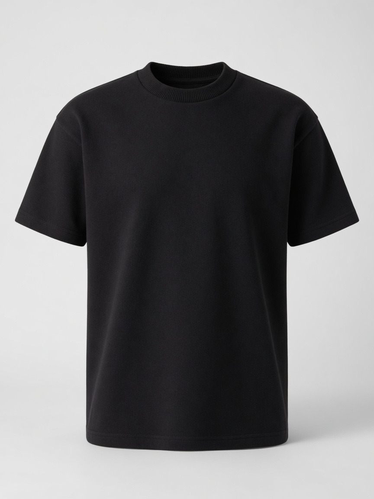
| 衣长 | 72 |
| 肩宽 | 49 |
| 胸围 | 110 |
| 摆围 | 108 |
| 袖长 | 22 |
| 克重 | 260g |
基础盘里的溢价轨。标题写清 240 / 260 / 280gsm。GQ 把 200gsm+ 当重磅门槛；Pro Club、Hanes Beefy-T、Comfort Colors 是亚马逊验证款。
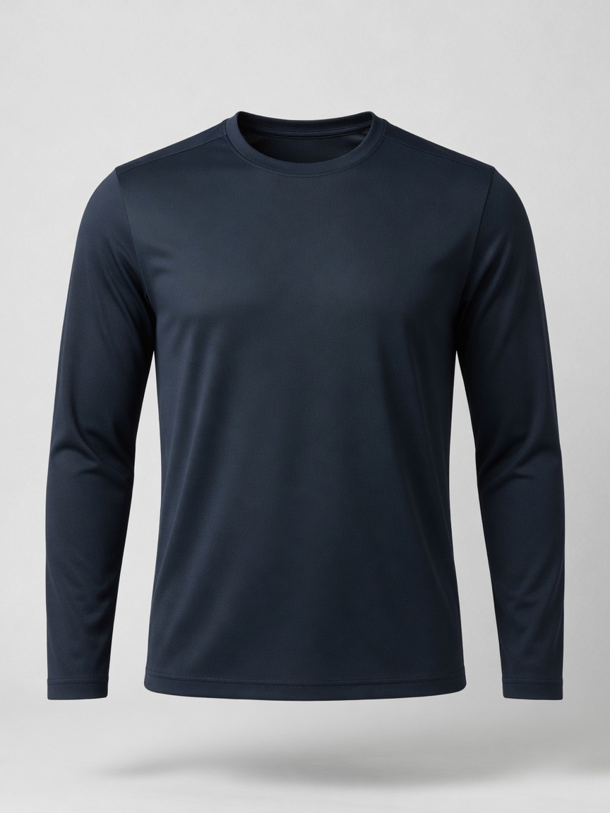
| 衣长 | 70 |
| 肩宽 | 46 |
| 胸围 | 104 |
| 摆围 | 100 |
| 袖长 | 21 |
| 弹力 | 四向 |
功能走量。涤氨网眼或蜂巢针，主图写 Quick Dry / Moisture Wicking / UPF。Temu、Amazon 运动榜长年有货。宽松训练版可另开一条。
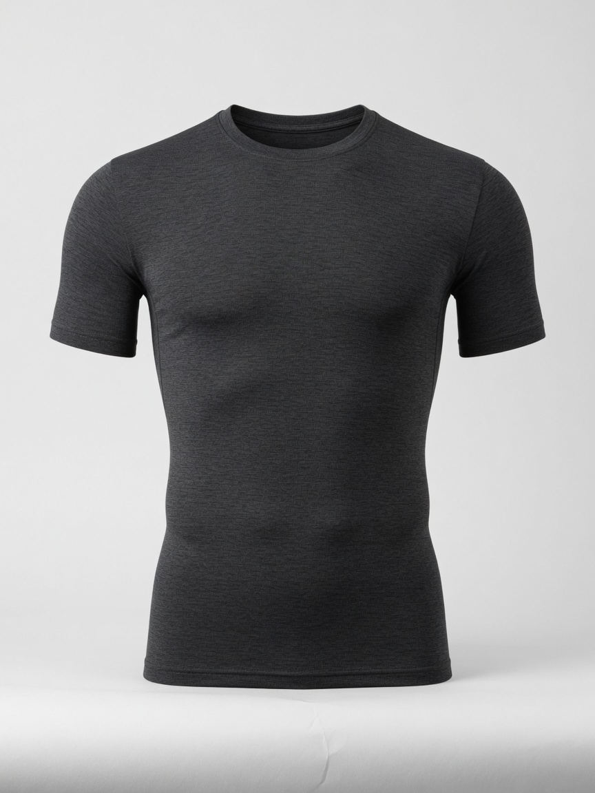
| 衣长 | 68 |
| 肩宽 | 42 |
| 胸围 | 94 |
| 摆围 | 88 |
| 袖长 | 20 |
| 氨纶 | 8–12% |
紧身压缩是细分，不要和宽松速干混 SKU。详情页必须有身材示意，尺码表按胸围实测，否则退货率会很高。
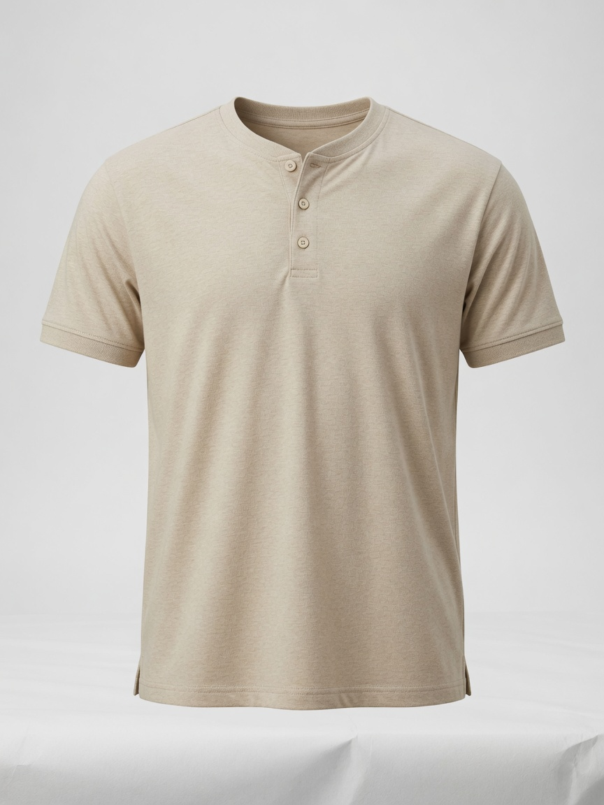
| 衣长 | 72 |
| 肩宽 | 48 |
| 胸围 | 110 |
| 摆围 | 108 |
| 袖长 | 22 |
| 扣位 | 3 粒 |
两条免审路径都是为这款留的。棉质基础、棉麻度假都能套。主图必须拍出领口 2–3 粒扣，否则后台会按圆领审。
面料是提质和溢价的核心。 基础款打克重（重磅）与手感（匹马棉 / 液氨）； 风格款靠肌理（华夫格 / 坑条）、自然感（竹节棉 / 棉麻）； 功能款靠凉感 / 防污 / 抗菌 / 莫代尔垂感解决痛点。
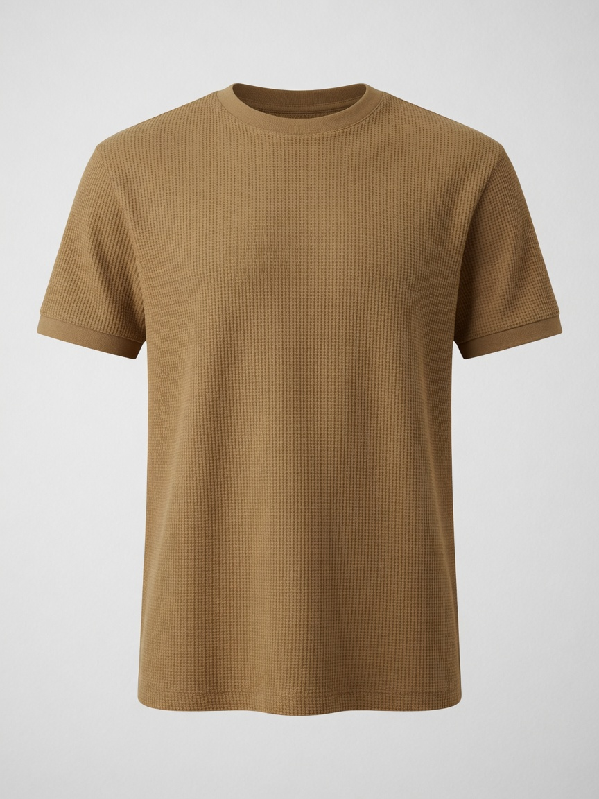
| 衣长 | 71 |
| 肩宽 | 50 |
| 胸围 | 112 |
| 摆围 | 110 |
| 袖长 | 22 |
| 肌理 | 华夫格 |
SHEIN、Temu 2026 夏季前排常见。不用印花也能看出「不是基础白 Tee」。主图特写格子，色系走驼 / 橄榄 / 黑。
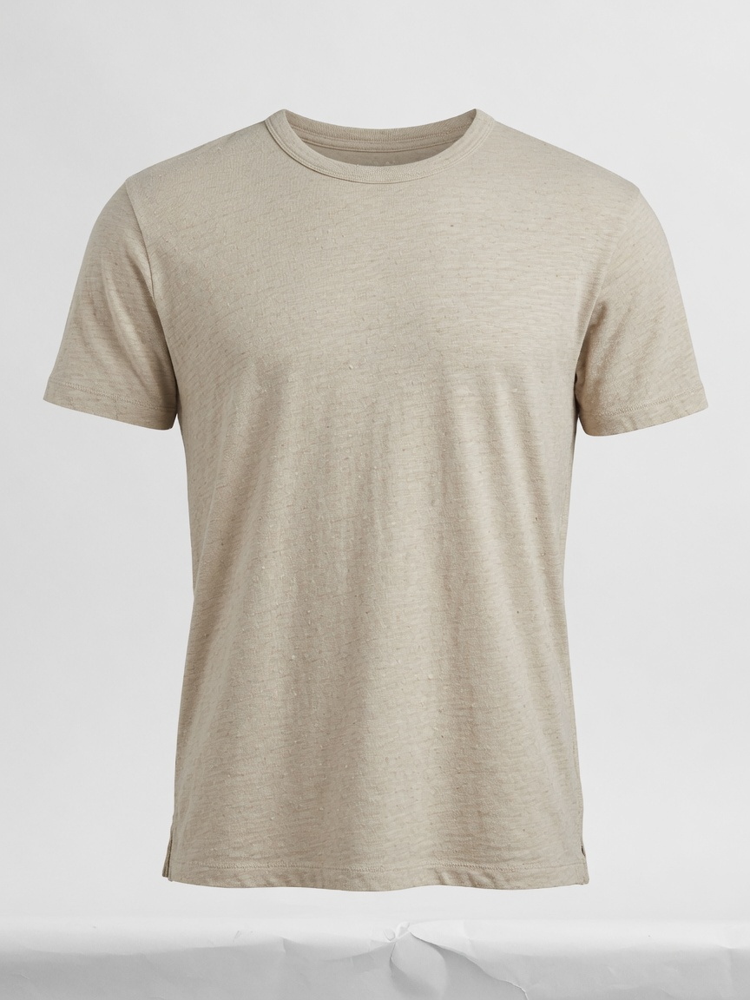
| 衣长 | 72 |
| 肩宽 | 48 |
| 胸围 | 110 |
| 摆围 | 108 |
| 袖长 | 22 |
| 手感 | 竹节棉 |
独立站（Buck Mason Slub、Warehouse）验证过的手感溢价。详情页要有近景纱结，不要拍成普通素色。燕麦 / 卡其比纯白更耐看。
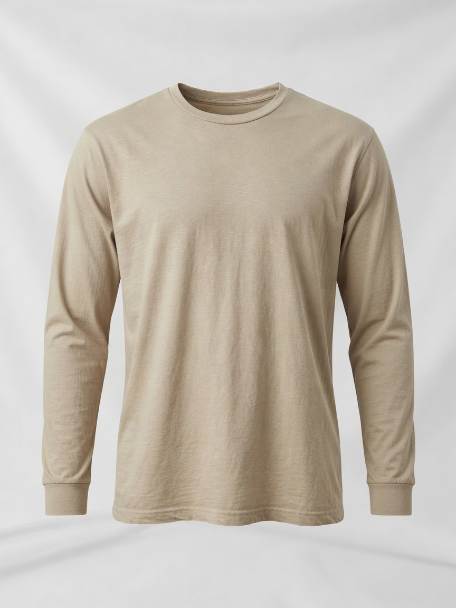
| 衣长 | 72 |
| 肩宽 | 49 |
| 胸围 | 112 |
| 摆围 | 110 |
| 袖长 | 22 |
| 混纺 | 棉麻 |
夏季度假词。Amazon 上 COOFANDY 棉麻亨利已经是长销，圆领短袖可切更轻的 T 恤形态。要接受自然皱，文案写成「亚麻质感」而不是「免烫」。
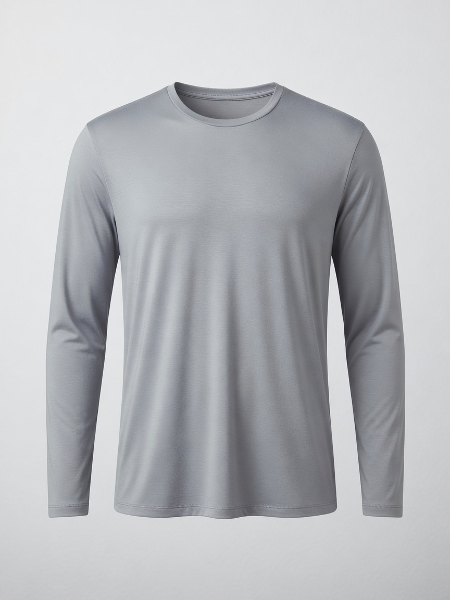
| 衣长 | 71 |
| 肩宽 | 47 |
| 胸围 | 106 |
| 摆围 | 104 |
| 袖长 | 22 |
| 面料 | 莫代尔 |
功能环保轨：凉感、三防白 T、抗菌、有机棉可共用这一套「解决问题」的详情页。CDLP 用 Tencel + 匹马棉卖 $135，平价可走莫代尔混纺。
打造美式复古、高街废土或度假风的核心工艺，适合做高溢价潮流单品。 Amazon 男 T 榜已出现 oversized vintage washed / acid wash；B2B 端 300gsm+ 酸洗空白 Tee 是跟款热点。 这是洗水工艺，不是印花图案。
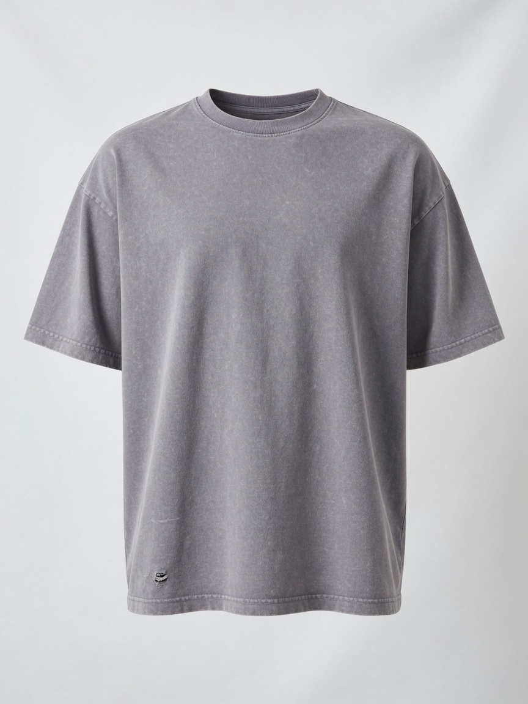
| 衣长 | 74 |
| 肩宽 | 56 |
| 胸围 | 124 |
| 摆围 | 122 |
| 袖长 | 23 |
| 工艺 | 酸洗 |
2026 街潮验证款。宽版 + 水洗比合身更出片。破洞要克制（下摆或袖口一点），过破会掉客单。Comfort Colors 成衣染是更「干净」的水洗替代。
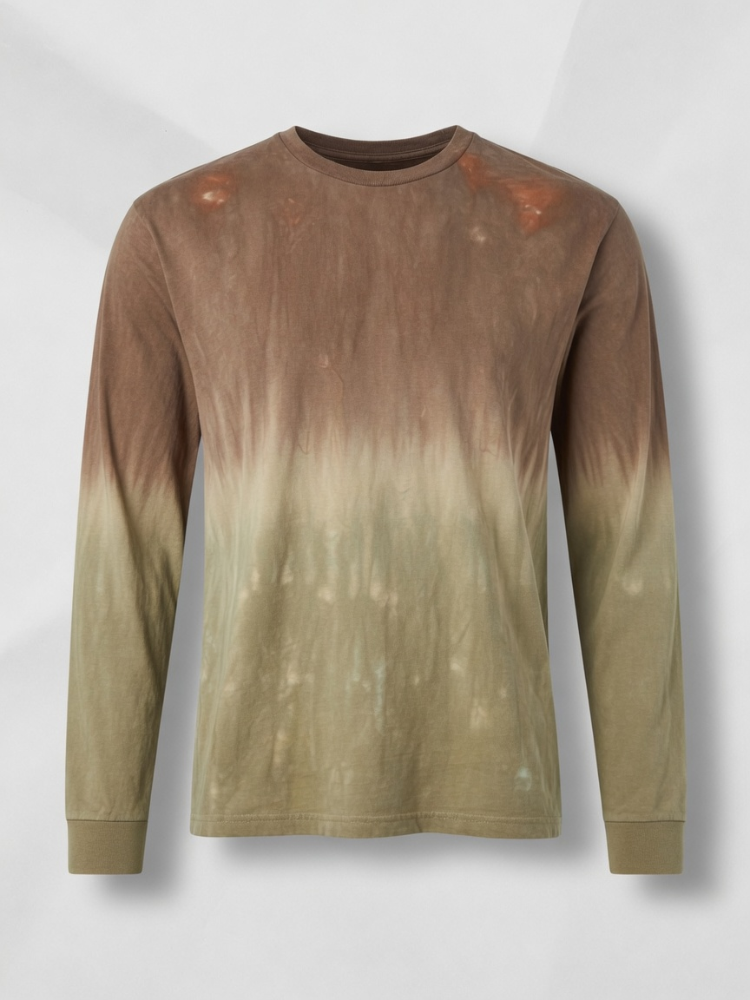
| 衣长 | 73 |
| 肩宽 | 50 |
| 胸围 | 114 |
| 摆围 | 112 |
| 袖长 | 22 |
| 工艺 | 扎染 |
度假与音乐节场景。色走土褐 / 卡其 / 雾蓝，比彩虹扎染更像男标。每缸色差要在详情页写清楚，否则差评会集中在「和图片不一样」。
本品类仍是普通男标 T 恤，不做大面积图形印花主航道。 拼接与假两件增加层次；小面积刺绣 / 贴布绣提升局部重工。万圣节等节日印花只作爆发点检索，不当常年 SKU。
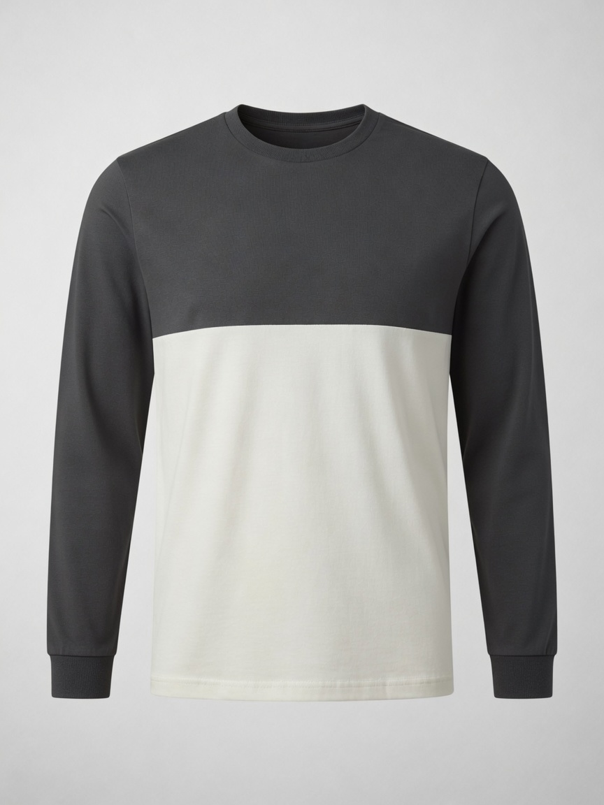
| 衣长 | 72 |
| 肩宽 | 48 |
| 胸围 | 108 |
| 摆围 | 106 |
| 袖长 | 22 |
| 工艺 | 拼接 |
不用印花也能拉开货盘。横拼最稳，假两件看缝位是否干净。SHEIN 男装拼接搜索量大，客单可略高于纯色。
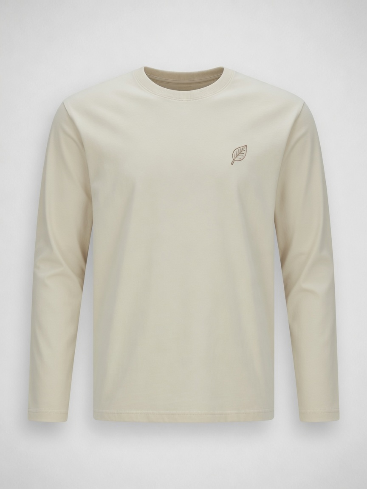
| 衣长 | 72 |
| 肩宽 | 48 |
| 胸围 | 110 |
| 摆围 | 108 |
| 袖长 | 22 |
| 装饰 | 小刺绣 |
左胸 3–5cm 最安全，避开大 Logo 与 IP。Etsy 定制刺绣客单高，平台店可做「小叶子 / 几何 / 文字」原创小标。重工贴布绣当利润款测。
下表为常规合身圆领基码。落肩 / Oversize 按「宽松加量」上浮；紧身训练按下浮。 最终以样衣 + 洗后尺寸为准。美码对照：S≈36–38 / M≈38–40 / L≈40–42 / XL≈42–44 / XXL≈44–46。
| 部位 | S | M | L | XL | XXL | 宽松加量（Oversize） |
|---|---|---|---|---|---|---|
| 胸围 Chest | 98 | 104 | 108 | 114 | 120 | +8～16 |
| 衣长 Length | 68 | 70 | 72 | 74 | 76 | +0～2（Boxy −4～6） |
| 肩宽 Shoulder | 44 | 46 | 48 | 50 | 52 | 落肩再 +6～10 |
| 袖长 Sleeve | 20 | 21 | 22 | 23 | 24 | +0～1 |
| 建议身高 Height | 165–170 | 170–175 | 175–180 | 180–185 | 185–190 | 详情页务必附图示 |
mens t-shirt / heavyweight tee / acid wash t-shirt男士 T 恤 Best Selling，先看哪类面料/版型在前排。
验证真实需求与差评点：缩水、透、领口变形、偏小。
官方畅销榜。当前是 Gildan / Hanes / Comfort Colors / Pro Club 基础盘。
低价带对照，避免盲目卷价。看华夫格、速干、基础色。
货源端销量，看工厂克重区间与起订。
基础纯色，对照走量色与价。
重磅人气。对标 Pro Club / Beefy-T / Comfort Colors。
运动 Tee 畅销榜，看速干与压缩占比。
功能走量，看面料卖点写法。
低价功能款，用来卡底价。
紧身训练细分验证。
高克重搜索，看 220g+ 怎么写标题。
手感溢价验证。独立站对标 Buck Mason Pima。
肌理款主力入口。
复古纱结手感，看评价是否提「起球」。
夏季自然感。亨利领占比高，圆领可切空白。
低价肌理对照。
功能卖点：凉感 / 冰丝 / 三防白 T。
环保轨。证书和成分表要比图案重要。
酸洗宽版，街潮主入口。
ADOREJOY 等 oversized washed 已进畅销榜。
成衣染 / 做旧，比破洞更稳。
扎染。优先看低饱和男标色。
低价洗水对照。
破洞 / 炒雪花，看破损尺度。
色块拼接热销。
假两件 / 撞色层次。
独立站刺绣定价与小标设计。
平台刺绣人气与差评点。
节日爆发点，只作季节检索。
8–10 月再开，不当常年货盘。
GQ 2026 重磅首选。Field-Spec / Slub / Pima 三条轨。
U 系列宽版 + Supima + AIRism，平价面料对照。
Premium Weight 基础盘，看克重话术。
年轻潮流版型与色系。
廓形与叠穿灵感。
街头男装，酸洗 / 宽版参考。
mens t-shirt / heavyweight t-shirt / washed tee英站男士 T 恤 Best Selling。
欧区站对照 UK 前排差异。
英站人气与评价。
德站本地词人气。
欧区年轻标杆，版型必扫。
货源销量排序。
英站重磅。
华夫格肌理。
酸洗英站热销。
宽版人气。
英国平价时尚，进入后选 Best sellers。
本土零售，进入后选 Most popular。
高质量对照，非低价赛道。
英区刺绣礼品向。
Temu / 全托管免审类目。点单条复制，或一次性复制全部。